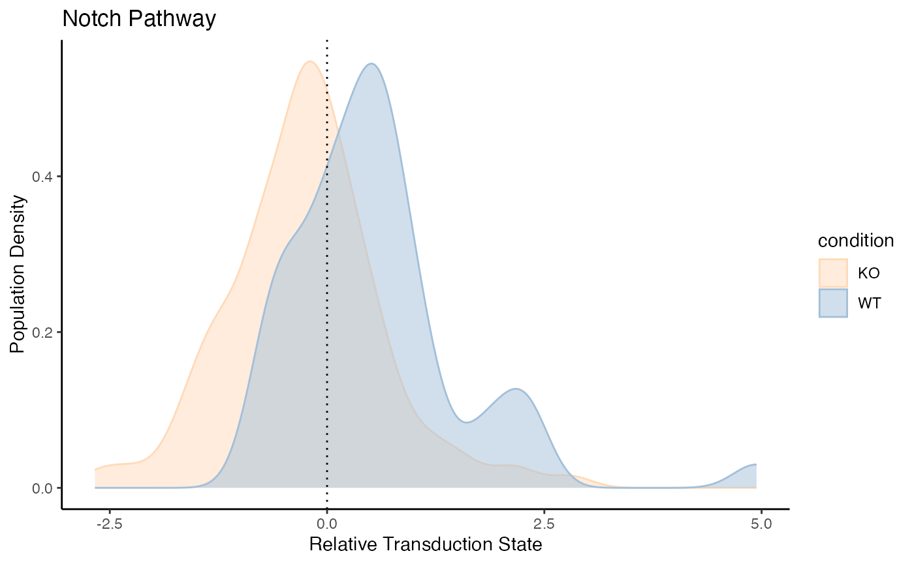
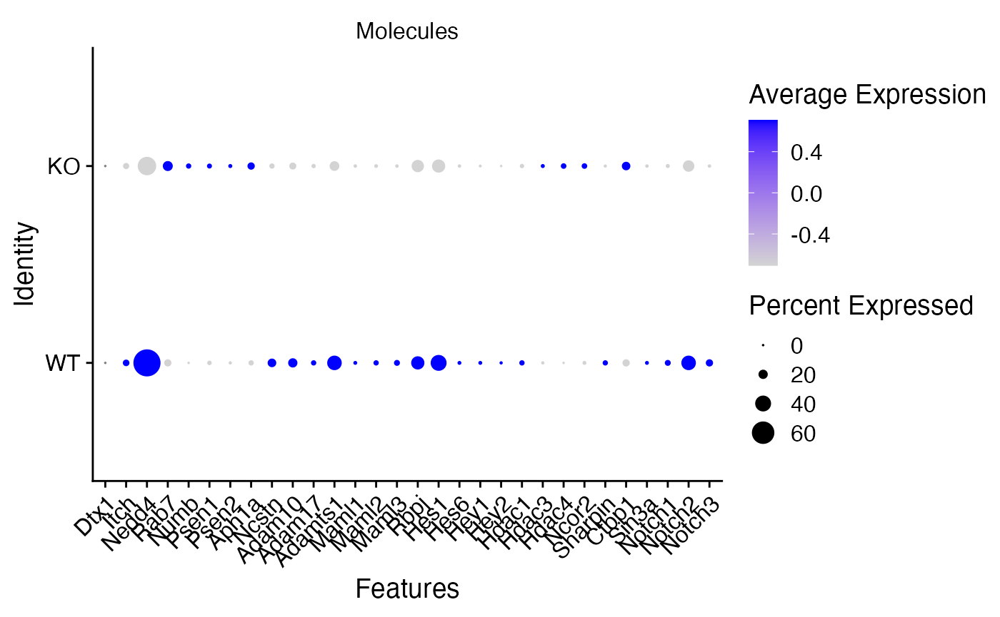
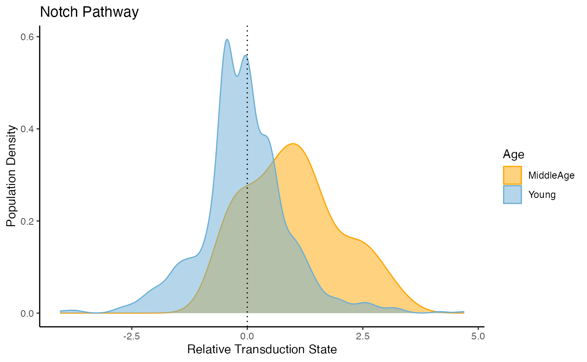

Notch_Analysis.RmdThis vignette demonstrates the application of PathwayEmbed in a Notch pertubed system (Ncstnfl/fl (cKO) bone marrow) and aging SSPC. The data reference: Remark, L.H., Leclerc, Ramsukh et al. Loss of Notch signaling in skeletal stem cells enhances bone formation with aging. Bone Res 11, 50 (2023). https://doi.org/10.1038/s41413-023-00283-8
library(Seurat)
#> Loading required package: SeuratObject
#> Loading required package: sp
#> 'SeuratObject' was built under R 4.4.1 but the current version is
#> 4.4.2; it is recomended that you reinstall 'SeuratObject' as the ABI
#> for R may have changed
#>
#> Attaching package: 'SeuratObject'
#> The following objects are masked from 'package:base':
#>
#> intersect, t
library(PathwayEmbed)
# Load WT and KO downloaded
wt_data <- Read10X(data.dir = "WT", gene.column = 2)
ko_data <- Read10X(data.dir = "KO", gene.column = 2)
# Create Seurat objects
wt_seurat <- CreateSeuratObject(counts = wt_data, project = "WT")
ko_seurat <- CreateSeuratObject(counts = ko_data, project = "KO")
# Add metadata
wt_seurat$condition <- "WT"
ko_seurat$condition <- "KO"
# Optional: merge
combined <- merge(wt_seurat, y = ko_seurat, add.cell.ids = c("WT", "KO"), project = "WT_vs_KO")
combined[['RNA']] <- JoinLayers(combined[['RNA']])
# QC
# Add % mitochondrial content
combined[["percent.mt"]] <- PercentageFeatureSet(combined, pattern = "^mt-")
VlnPlot(combined, features = c("nFeature_RNA", "nCount_RNA", "percent.mt"), ncol = 3)
combined <- subset(combined, subset = nFeature_RNA > 200 & nFeature_RNA < 2000 & percent.mt < 10)
# Before filtering (already run above, so you can skip if done)
VlnPlot(combined, features = c("nFeature_RNA", "nCount_RNA", "percent.mt"))
# Count cells per condition after filtering
table(combined$condition)
# KO WT
# 8690 7778
# Normalization and Scale
combined <- NormalizeData(combined, normalization.method = "LogNormalize", scale.factor = 10000)
combined <- FindVariableFeatures(combined, selection.method = "vst", nfeatures = 2000)
combined <- ScaleData(combined)
# PCA
combined <- RunPCA(combined)
ElbowPlot(combined,ndims = 50) # Check how many PCs to use
combined <- FindNeighbors(combined, dims = 1:20)
combined <- FindClusters(combined, resolution = 1)
combined <- RunUMAP(combined, dims = 1:20)
# Visualize
DimPlot(combined, label = TRUE)
FeaturePlot(combined, "Cxcl12")
FeaturePlot(combined, "Kitl")# 23, 25 SSPC Marker in the paper
COI_2 <- subset(combined, subset = seurat_clusters %in% c("23", "25")) # SSPC
pathway_data <- ComputeCellData(COI_2 , "Notch", "manhattan")
#> New names:
#> Centering and scaling data matrix
#> • `` -> `...4`
#> Warning: Different features in new layer data than already exists for
#> scale.data
#> Warning: The `slot` argument of `GetAssayData()` is deprecated as of SeuratObject 5.0.0.
#> ℹ Please use the `layer` argument instead.
#> ℹ The deprecated feature was likely used in the PathwayEmbed package.
#> Please report the issue to the authors.
#> This warning is displayed once every 8 hours.
#> Call `lifecycle::last_lifecycle_warnings()` to see where this warning was
#> generated.
#> New names:
#> Centering and scaling data matrix
#> Parameter 'batch.size' is missing or NULL. Setting default batch size to 1000.
#> Processing batch 1
#> Computing distance...
#> Running MDS ...
#> MDS finished
#> • `` -> `...4`
#> Batch 1 processed with 163 cells
to_plot <- PreparePlotData(COI_2, pathway_data, "condition")
PlotPathway(to_plot, "Notch", "condition", c("#FFDAB9", "#A3BFD9"))
CalculatePercentage(to_plot, "condition")
#> # A tibble: 2 × 4
#> group percentage_on percentage_off cohens_d
#> <chr> <dbl> <dbl> <dbl>
#> 1 KO 35.4 64.6 -0.877
#> 2 WT 74 26 -0.877
notch_molecule <- LoadPathway("Notch")[,1]
#> New names:
#> • `` -> `...4`
# Examine the differences of the coefficients assigned and actual directions in the perturbation system
score <- LoadPathway("Notch")[,2]
#> New names:
#> • `` -> `...4`
Idents(COI_2) <- "condition"
DotPlot(COI_2, features = notch_molecule)+RotatedAxis()
#> Warning: Scaling data with a low number of groups may produce misleading
#> results
#> Warning: The `facets` argument of `facet_grid()` is deprecated as of ggplot2 2.2.0.
#> ℹ Please use the `rows` argument instead.
#> ℹ The deprecated feature was likely used in the Seurat package.
#> Please report the issue at <https://github.com/satijalab/seurat/issues>.
#> This warning is displayed once every 8 hours.
#> Call `lifecycle::last_lifecycle_warnings()` to see where this warning was
#> generated.
# Load Matrix Data Downloaded
wt_data <- Read10X(
"~/Desktop/Intracellular Pathway/Test data set/WT",
gene.column = 2,
cell.column = 1,
unique.features = TRUE,
strip.suffix = FALSE
)
WT_object <- CreateSeuratObject(counts = wt_data)
young_data <- Read10X(
"~/Desktop/Intracellular Pathway/Test data set/Young",
gene.column = 2,
cell.column = 1,
unique.features = TRUE,
strip.suffix = FALSE
)
Young_object <- CreateSeuratObject(counts = young_data)
# Assign Age Group
WT_object$Age <- 'MiddleAge'
Young_object$Age <- 'Young'
# Filter
# mitochondria percent
WT_object[["percent.mt"]] <- PercentageFeatureSet(WT_object , pattern = "^mt-")
Young_object[["percent.mt"]] <- PercentageFeatureSet(Young_object , pattern = "^mt-")
# Apply filtering: Keep cells with at least 100 genes and <30% mitochondrial content
WT_object_filtered<- subset(WT_object , subset = nFeature_RNA >= 100 & percent.mt < 30)
Young_object_filtered<- subset(Young_object , subset = nFeature_RNA >= 100 & percent.mt < 30)
# Check the number of remaining cells
dim(WT_object_filtered) #[1] 32285 8842
dim(Young_object_filtered) # [1] 32285 15232
# Merge
merge_object <- merge(WT_object_filtered, Young_object_filtered, add.cells.id = c('WT', 'Young'))
merge_object[['RNA']] <- JoinLayers(merge_object[['RNA']])
# Normalization
merge_object <- NormalizeData(merge_object)
## Remove genes detected in fewer than 5 cells
merge_object <- subset(merge_object , features = rownames(merge_object )[Matrix::rowSums(GetAssayData(merge_object , slot = "counts") > 0) > 5])
# Identiy Highly variable genes
merge_object <- FindVariableFeatures(merge_object , selection.method = "vst", nfeatures = 3000)
# Scale Data
merge_object <- ScaleData(merge_object)
# PCA
merge_object <- RunPCA(merge_object)
ElbowPlot(merge_object) # Check how many PCs to use
merge_object <- FindNeighbors(merge_object, dims = 1:10)
merge_object <- FindClusters(merge_object, resolution = 1)
merge_object <- RunUMAP(merge_object, dims = 1:10)
# Visualize
DimPlot(merge_object, reduction = "umap", group.by = "Age", label = TRUE)
DimPlot(merge_object, reduction = "umap", label = TRUE)
# Optional
saveRDS(merge_object, file = "Middle_age_object.rds")
# Load
Middle_age_object <- readRDS("Middle_age_object.rds")
# Identify Skeletal Stem Cells
FeaturePlot(Middle_age_object, reduction = "umap", feature = "Cxcl12", order = TRUE) #11 SSPC Marker in the paper
cluster_of_interest <- subset(Middle_age_object, subset = seurat_clusters == 11)
COI_notch <- ComputeCellData(cluster_of_interest, "Notch", "manhattan", batch.size = 1000, scale.data = TRUE)
#> New names:
#> Centering and scaling data matrix
#> • `` -> `...4`
#> Warning: Different features in new layer data than already exists for
#> scale.data
#> New names:
#> Centering and scaling data matrix
#> Processing batch 1
#> Computing distance...
#> Running MDS ...
#> MDS finished
#> • `` -> `...4`
#> Batch 1 processed with 834 cells
To_plot <- PreparePlotData(cluster_of_interest, COI_notch, "Age")
plot_1 <- PlotPathway(To_plot, "Notch", "Age", c("orange", "#6baed6"))
CalculatePercentage(To_plot, "Age")
#> # A tibble: 2 × 4
#> group percentage_on percentage_off cohens_d
#> <chr> <dbl> <dbl> <dbl>
#> 1 Young 42.8 57.2 -1.09
#> 2 MiddleAge 76.9 23.1 -1.09
print(plot_1)